Plotting xcms results using lcmsPlot
Source:vignettes/xcms-plotting-using-lcmsPlot.Rmd
xcms-plotting-using-lcmsPlot.RmdPackage: xcms
Authors: Ossama Edbali, Johannes Rainer
Modified: 2026-10-08 08:08:16.78629
Compiled: Thu Oct 8 08:55:39 2026
Introduction
Visualization of mass spectrometry data is an important component of LC-MS data analysis, both for quality control and for interpretation and communication of results. Throughout a metabolomics or proteomics workflow, visualization can help identify problems with data acquisition and processing, such as retention-time shifts, signal drift, differences in signal intensity between samples, and incorrect or poorly defined chromatographic peaks. It also provides an essential means of inspecting detected features and communicating results.
xcms provides a range of visualization functions for inspecting LC-MS data and the results of chromatographic peak detection, retention-time correction, and feature definition. These functions cover many common quality-control and diagnostic use cases and are closely integrated with the xcms data structures and processing workflow. For more complex visualizations, however, users may benefit from the flexibility of the ggplot2 grammar of graphics, particularly when combining multiple samples, annotations, experimental metadata, or several graphical layers into a single figure.
lcmsPlot has been developed to facilitate the visualization of LC-MS raw and processed data in a consistent and flexible manner across different software tools and processing workflows. By providing a common ggplot2-based framework for LC-MS visualization, it enables users to apply a consistent graphical approach to data generated or processed by different packages and at different stages of an analysis workflow.
This vignette illustrates how lcmsPlot can be used together with xcms to generate flexible, reproducible, and publication-ready visualizations of LC-MS data.
For a more thorough description of the package, including its support for raw files and for the outputs of other LC-MS software, see the lcmsPlot vignette.
Load the packages
lcmsPlot is a Bioconductor package and can be installed with BiocManager:
if (!requireNamespace("BiocManager", quietly = TRUE))
install.packages("BiocManager")
BiocManager::install("lcmsPlot")Load the data
Throughout this vignette we use the preprocessing result that is shipped with xcms and that is described in detail in the main xcms vignette. It is derived from a subset of the data from [1]; the raw files are provided by the faahKO package.
Using loadXcmsData() we get the fully preprocessed
object directly, so that chromatographic peak detection, alignment and
correspondence do not have to be repeated here.
xdata <- loadXcmsData("xdata")The object contains eight samples assigned to the two sample groups
"KO" and "WT":
Biobase::pData(xdata)## sample_name sample_group sample_type
## 1 ko15 KO QC
## 2 ko16 KO study
## 3 ko21 KO study
## 4 ko22 KO QC
## 5 wt15 WT study
## 6 wt16 WT study
## 7 wt21 WT QC
## 8 wt22 WT studyPlot samples summaries
Base peak chromatograms, total ion chromatograms, and total ion current plots are useful in LC-MS because they simplify complex datasets, highlight the most intense signals, and enable rapid detection and comparison of chromatographic features.
In the examples below we plot the base peak and total ion chromatograms for the eight samples (faceted):
lcmsPlot(xdata, sample_id_column = "sample_name") +
lp_chromatogram(aggregation_fun = "max") +
lp_facets(facets = "sample_name", ncol = 4)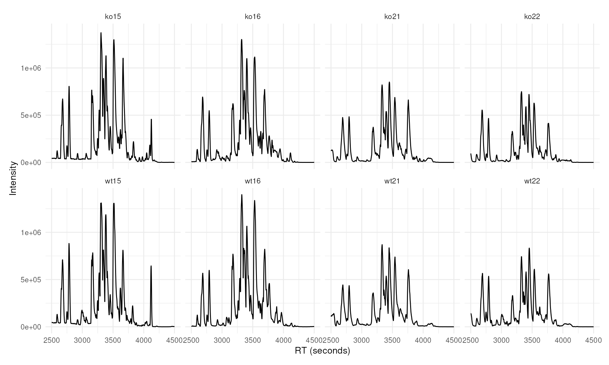
lcmsPlot(xdata, sample_id_column = "sample_name") +
lp_chromatogram(aggregation_fun = "sum") +
lp_facets(facets = "sample_name", ncol = 4)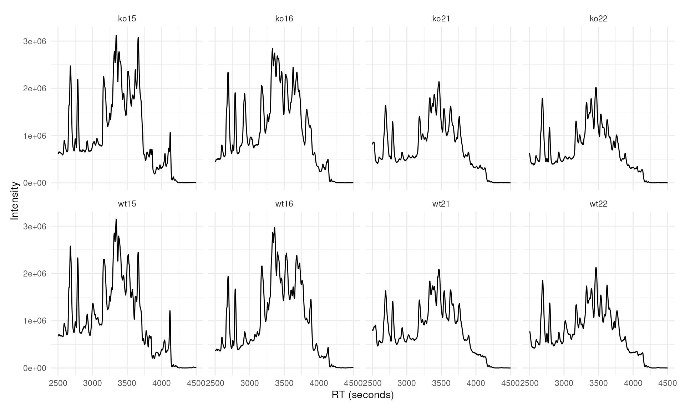
We can also plot multiple chromatograms in the same plot, overlapped. In the example below, base peak chromatograms are computed for each sample, grouped by sample group, and displayed together in one panel.
lcmsPlot(xdata, sample_id_column = "sample_name") +
lp_chromatogram(aggregation_fun = "max") +
lp_arrange(group_by = "sample_group") +
lp_labels(title = "Base peak chromatograms", legend = "Sample group") +
lp_legend(position = "bottom")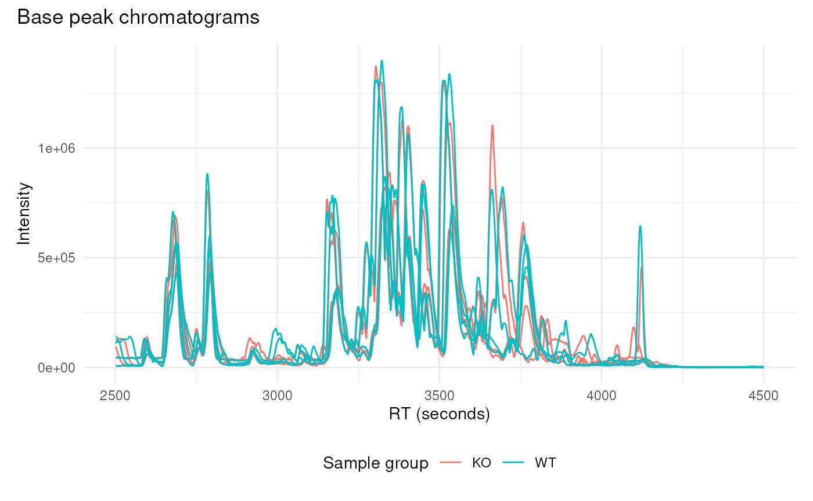
Below, we generate a total ion current plot for the eight samples under consideration:
lcmsPlot(xdata, sample_id_column = "sample_name") +
lp_total_ion_current(type = "violin") +
lp_arrange(group_by = "sample_group") +
lp_labels(title = "Total ion current", legend = "Sample group")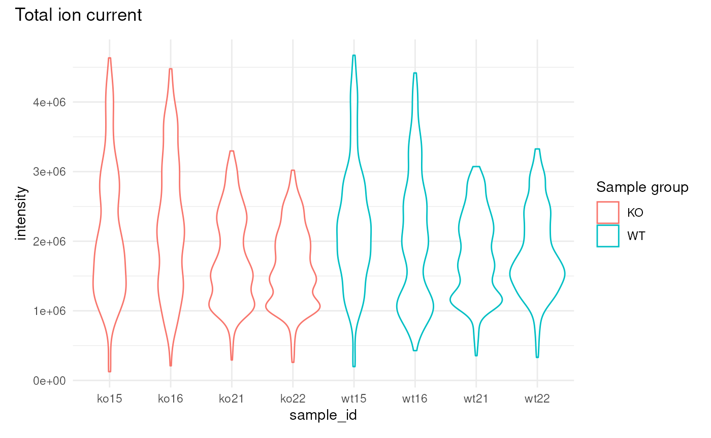
These plots show the overall amount of ion signal entering the detector at any moment, widely used for quality control and method assessment.
Plot extracted ion chromatograms
lcmsPlot(xdata, sample_id_column = "sample_name") +
lp_chromatogram(features = rbind(c(
mzmin = 334.9,
mzmax = 335.1,
rtmin = 2700,
rtmax = 2900))) +
lp_arrange(group_by = "sample_group") +
lp_labels(legend = "Sample group")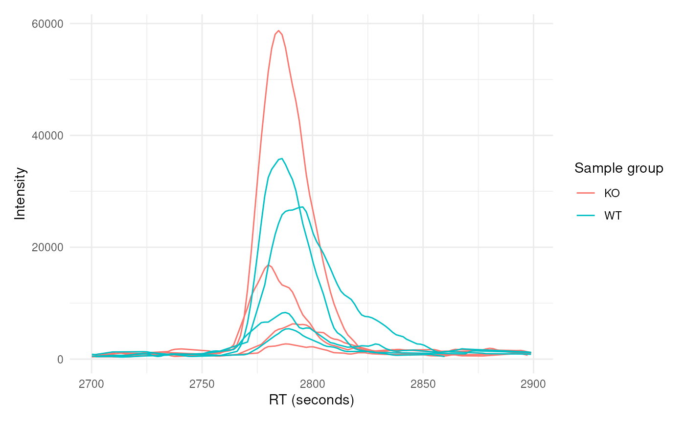
The above plot can be gridded on metadata factors; in the plot below
we arrange feature_id along the rows and
sample_id along the columns with lp_grid(),
and detected chromatographic peaks are highlighted using the
highlight_peaks parameter:
lcmsPlot(xdata, sample_id_column = 'sample_name') +
lp_chromatogram(
features = rbind(
mz334 = c(
mzmin = 334.9, mzmax = 335.1,
rtmin = 2700, rtmax = 2900),
mz278 = c(
mzmin = 278.99721, mzmax = 279.00279,
rtmin = 2740, rtmax = 2840)
),
highlight_peaks = TRUE,
highlight_peaks_color = '#f00') +
lp_grid(rows = 'feature_id', cols = 'sample_id', free_y = TRUE)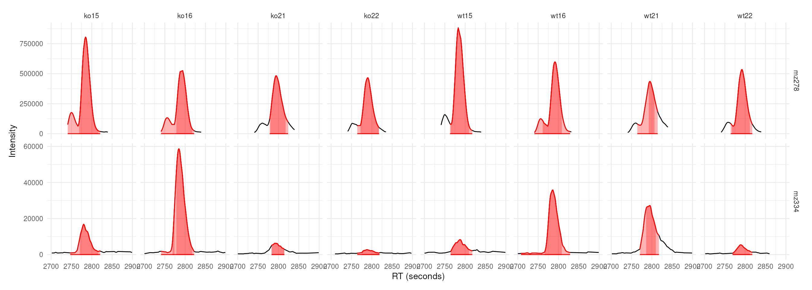
The same plot with base R graphics
The same figure can be produced with the plotting functions of
xcms itself. The extracted ion chromatograms are first created
with the chromatogram() function, which returns an
XChromatograms object with one chromatogram per feature
(row) and sample (column), and the detected chromatographic peaks
attached to each of them.
mzr_xic <- rbind(c(334.9, 335.1), c(278.99721, 279.00279))
rtr_xic <- rbind(c(2700, 2900), c(2740, 2840))
chrs_xic <- chromatogram(xdata, mz = mzr_xic, rt = rtr_xic)
## Define one color per sample group
group_colors <- RColorBrewer::brewer.pal(3, "Set1")[1:2]
names(group_colors) <- c("KO", "WT")
sample_colors <- group_colors[chrs_xic$sample_group]
## Label the rows the same way lcmsPlot names its features
feature_ids <- sprintf("M%dT%d", round(rowMeans(mzr_xic)),
round(rowMeans(rtr_xic)))
## One panel per feature (row) and sample (column)
par(mfrow = c(nrow(chrs_xic), ncol(chrs_xic)),
mar = c(3, 3, 1.8, 0.4), mgp = c(1.9, 0.6, 0), cex = 0.7)
for (i in seq_len(nrow(chrs_xic))) {
for (j in seq_len(ncol(chrs_xic))) {
plot(chrs_xic[i, j], col = sample_colors[j],
peakType = "polygon", peakCol = paste0(sample_colors[j], 60),
peakBg = paste0(sample_colors[j], 40),
main = paste(feature_ids[i], chrs_xic$sample_name[j]))
}
}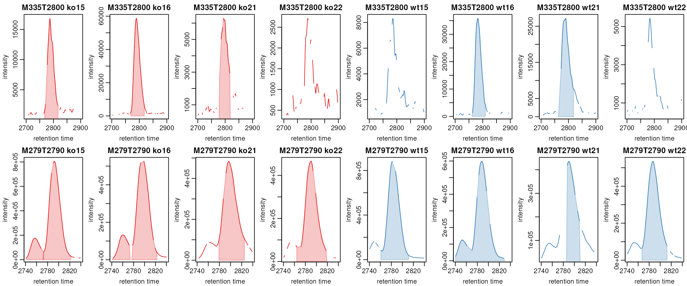
The result is equivalent to the lp_grid() figure above,
but the layout has to be set up explicitly:
par(mfrow = ...) defines the grid, the two nested loops
address the individual cells chrs_xic[i, j] of the
XChromatograms object, and the panel titles and per-sample
colors have to be assembled by hand. Each panel also keeps its own y
axis, which corresponds to free_y = TRUE in
lp_grid().
In lcmsPlot, you can also plot directly from an
XChromatograms object. In the example below, two features
are defined by their m/z ranges and the corresponding retention time
windows. The resulting plot is arranged as a grid with features as rows
and samples as columns.
mzr <- matrix(c(344, 344, 360, 360), ncol = 2, byrow = TRUE)
rtr <- matrix(c(2500, 2880, 2600, 2880), ncol = 2, byrow = TRUE)
chrs <- chromatogram(xdata, mz = mzr, rt = rtr)
rownames(chrs) <- c("mz344", "mz360")
lcmsPlot(chrs) +
lp_chromatogram(na.rm = TRUE) +
lp_grid(rows = "feature_id", cols = "sample_id")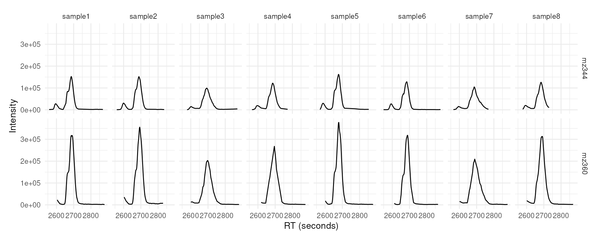
Quality control of peak detection
lp_peak_count_image() bins the retention-time axis and
shows how many chromatographic peaks each sample yielded in each bin,
with samples on the y axis and one tile per sample and bin. It is the
counterpart of xcms::plotChromPeakImage().
lcmsPlot(xdata, sample_id_column = "sample_name") +
lp_peak_count_image(bin_size = 30) +
lp_labels(title = "Chromatographic peaks per 30 s bin")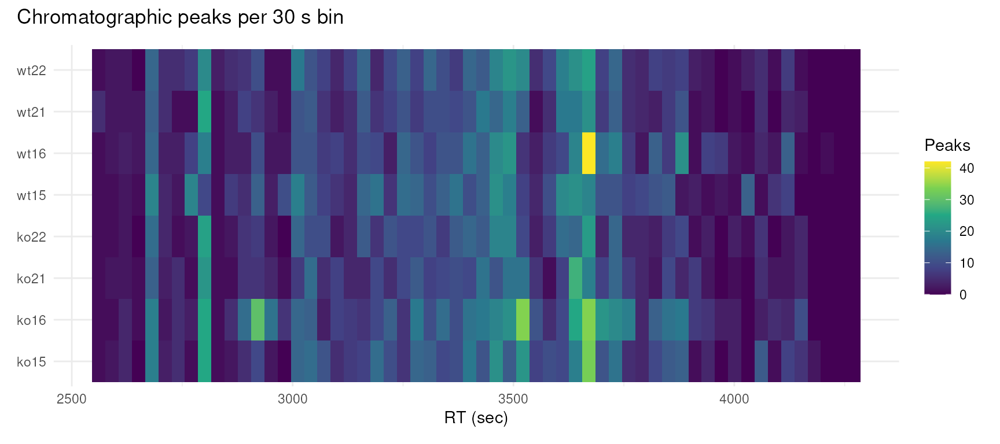
lp_chrom_peak_rects() draws one rectangle per detected
peak, spanning its retention-time limits by its m/z limits, and shows
where in the m/z / retention-time plane the peak detection actually
placed its boundaries.
lcmsPlot(xdata, sample_id_column = "sample_name") +
lp_chrom_peak_rects(
sample_ids = c("ko15", "wt15"),
rt_range = c(3200, 3700),
mz_range = c(480, 540),
fill = "#c0392b60")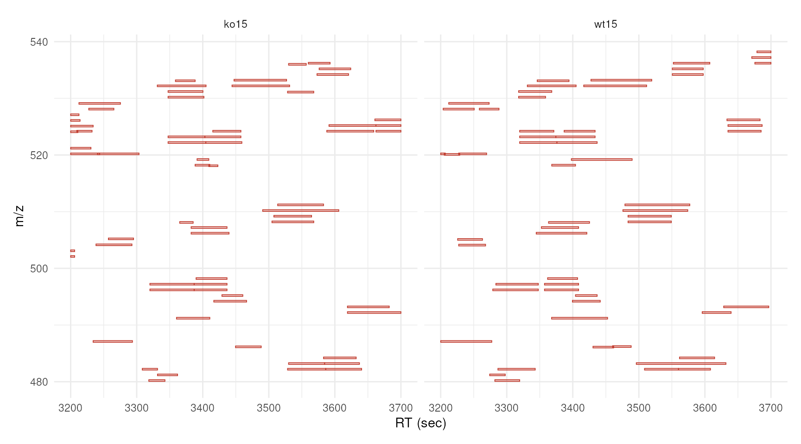
Plot grouped peaks across samples (features)
The correspondence analysis performed on this data set grouped the
chromatographic peaks of the individual samples into features,
i.e. groups of peaks that likely originate from the same ion. Each
feature is identified by the corresponding row name of
featureDefinitions(xdata), by default "FT001",
"FT002", and so on. These identifiers can be passed to the
features parameter of lp_chromatogram() to
extract and plot the corresponding chromatograms across all samples
without having to specify m/z and retention time ranges manually. The
ppm and rt_tol parameters define how far
around the feature’s consensus m/z and retention time the signal is
extracted.
lcmsPlot(xdata, sample_id_column = 'sample_name') +
lp_chromatogram(
features = c('FT002', 'FT004', 'FT019', 'FT027'),
ppm = 10,
rt_tol = 80,
highlight_peaks = TRUE,
highlight_peaks_factor = "sample_group") +
lp_arrange(group_by = 'sample_group') +
lp_facets(facets = 'feature_id', ncol = 2, free_x = TRUE, free_y = TRUE) +
lp_labels(title = "Four selected features", legend = "Sample") +
lp_legend(position = "bottom")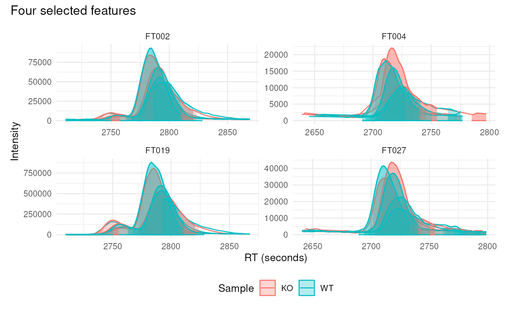
Plot peak density alongside chromatograms
Peak density plots show how the detected chromatographic peaks of an
m/z window are distributed along the retention time axis. Each detected
peak is drawn as a point at the y position of its sample and the kernel
density estimate of the peak apex retention times is overlaid as a line.
This is the diagnostic used by the peak density correspondence method
and makes it easy to judge whether the peaks of the different samples
are well aligned and whether a feature is tightly defined. It is the
lcmsPlot counterpart of
xcms::plotChromPeakDensity().
When lp_peak_density() follows
lp_chromatogram(), the features argument is
inherited from the chromatogram layer and does not have to be repeated.
The bw parameter should match the bandwidth used during
correspondence, and when min_fraction is given the grouping
is simulated so that the retention time regions that would be defined as
features are drawn as semi-transparent rectangles.
lcmsPlot(xdata, sample_id_column = "sample_name") +
lp_chromatogram(
sample_ids = c("ko15", "ko16", "wt16", "wt21"),
features = rbind(c(
mzmin = 334.9, mzmax = 335.1, rtmin = 2700, rtmax = 2900)),
highlight_peaks = TRUE
) +
lp_peak_density(
bw = 30,
min_fraction = 0.5
) +
lp_labels(legend = "Sample ID")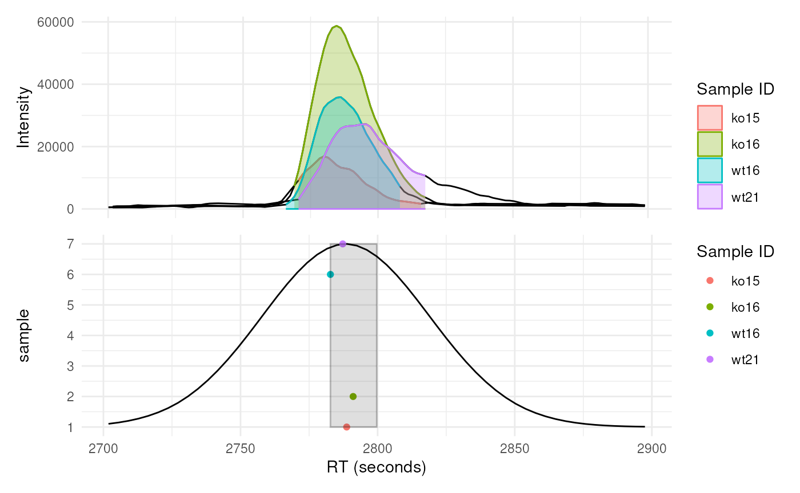
Plot spectra
Spectra are added to a plot with the lp_spectra()
function. Its mode parameter determines which scan a
spectrum is extracted from.
Select the closest scan to a specified retention time
With mode = "closest" the spectrum is taken from the
scan closest to the retention time given by the rt
parameter. The retention time at which the spectrum was acquired is
marked with a vertical dashed line on the chromatogram, so that the
spectrum can be related to the chromatographic peak it belongs to.
lcmsPlot(xdata, sample_id_column = "sample_name") +
lp_chromatogram(
features = "FT034",
sample_ids = "ko15",
ppm = 20,
rt_tol = 60,
highlight_peaks = TRUE) +
lp_spectra(rt = 2789, mode = "closest", ms_level = 1) +
lp_labels(title = "Feature FT034", legend = "Sample") +
lp_legend(position = "bottom")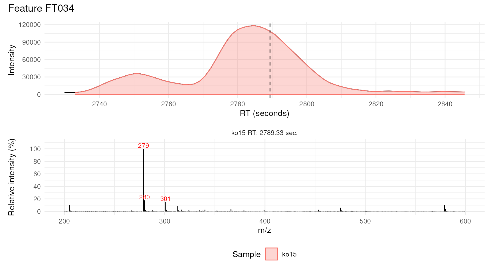
Select the scan closest to a detected peak apex
With mode = "closest_apex" the retention time of the
peak maximum is determined from the chromatographic peaks detected by
xcms and the nearest scan is used, which removes the need to
specify a retention time manually.
In the example below, chromatograms are extracted for two features in
one sample and the MS1 spectrum at the apex of each is displayed below
its chromatogram. The lp_layout() function is used to give
the spectra more vertical space than the chromatograms.
lcmsPlot(xdata, sample_id_column = "sample_name") +
lp_chromatogram(
features = c("FT219", "FT250"),
sample_ids = "ko15",
ppm = 20,
rt_tol = 60,
highlight_peaks = TRUE) +
lp_spectra(mode = "closest_apex", ms_level = 1) +
lp_facets(facets = "feature_id", ncol = 2) +
lp_labels(legend = "Sample") +
lp_legend(position = "bottom") +
lp_layout(design = "C\nS\nS")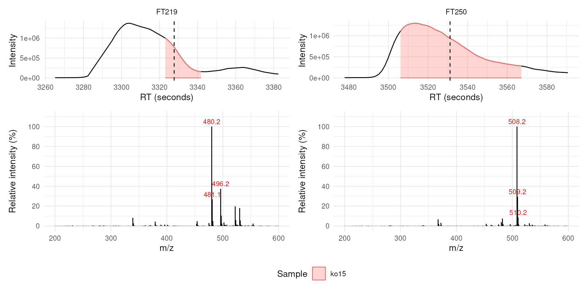
Each spectrum is dominated by the m/z of its own feature, accompanied by the corresponding isotope peaks.
Select multiple scans across a detected peak
To follow how the spectral composition changes over the duration of a
chromatographic peak, several scans can be extracted across it with
mode = "across_peak". The interval parameter
defines the retention time spacing (in seconds) between the selected
scans.
lcmsPlot(xdata, sample_id_column = "sample_name") +
lp_chromatogram(
features = "FT083",
sample_ids = "ko15",
ppm = 20,
rt_tol = 60,
highlight_peaks = TRUE) +
lp_spectra(mode = "across_peak", interval = 15, ms_level = 1) +
lp_labels(legend = "Sample") +
lp_legend(position = "bottom") +
lp_layout(design = "C\nS\nS")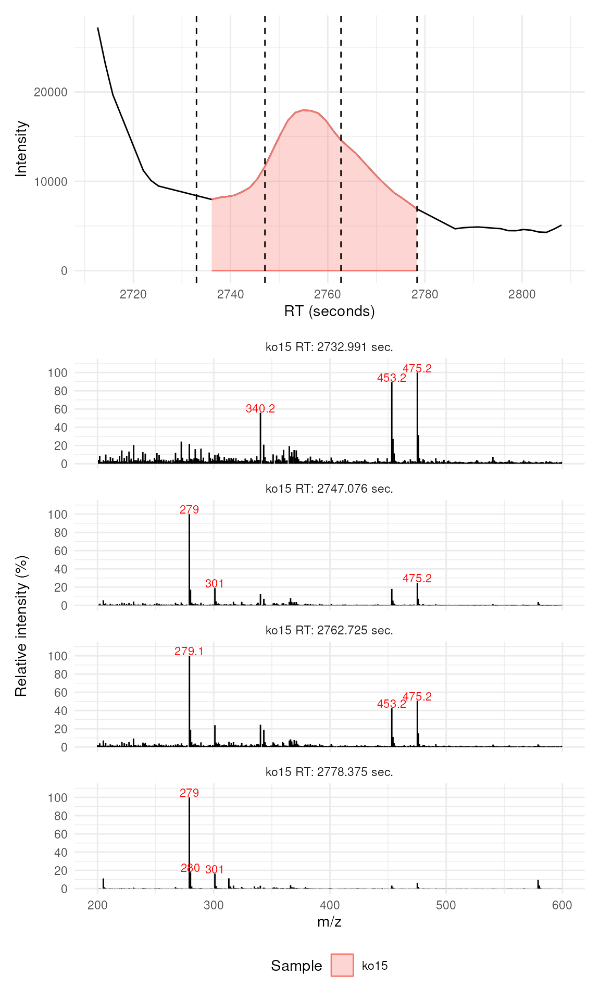
This view makes co-elution visible: the ion of the feature dominates the spectrum at the beginning of the peak, while towards its end other ions become the most intense signals of the scan.
Plot standalone spectra
Spectra can also be plotted on their own, without an accompanying
chromatogram, which is useful for a detailed comparison of isotope
patterns or relative ion intensities between samples. Standalone spectra
are created by using lp_spectra() without
lp_chromatogram().
lcmsPlot(xdata, sample_id_column = "sample_name") +
lp_spectra(
sample_ids = c("ko15", "wt15"),
rt = 3323,
mode = "closest",
ms_level = 1) +
lp_labels(title = "MS1 spectra at 3323 seconds") +
lp_legend(position = "bottom")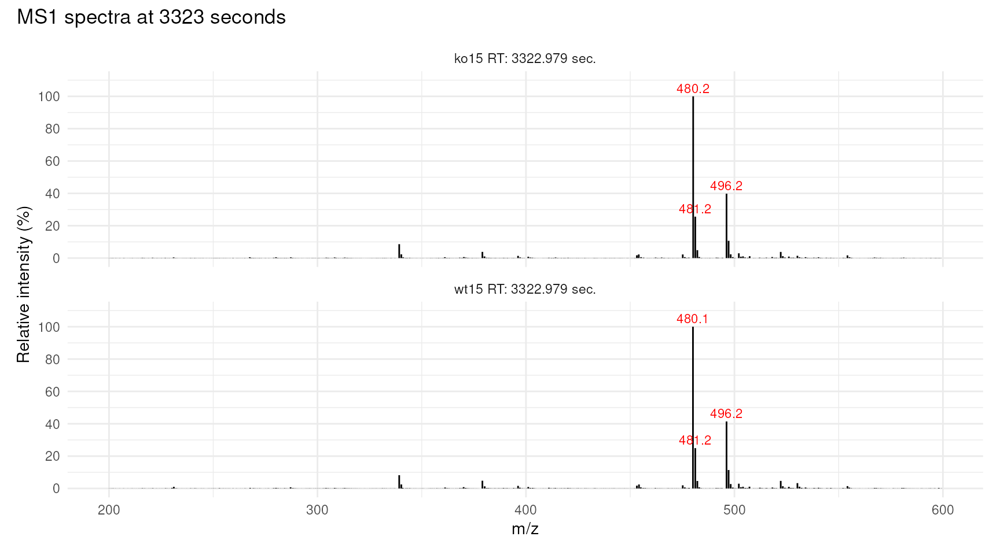
Session information
## R version 4.6.1 (2026-06-24)
## Platform: x86_64-pc-linux-gnu
## Running under: Ubuntu 24.04.4 LTS
##
## Matrix products: default
## BLAS: /usr/lib/x86_64-linux-gnu/openblas-pthread/libblas.so.3
## LAPACK: /usr/lib/x86_64-linux-gnu/openblas-pthread/libopenblasp-r0.3.26.so; LAPACK version 3.12.0
##
## locale:
## [1] LC_CTYPE=en_US.UTF-8 LC_NUMERIC=C
## [3] LC_TIME=en_US.UTF-8 LC_COLLATE=en_US.UTF-8
## [5] LC_MONETARY=en_US.UTF-8 LC_MESSAGES=en_US.UTF-8
## [7] LC_PAPER=en_US.UTF-8 LC_NAME=C
## [9] LC_ADDRESS=C LC_TELEPHONE=C
## [11] LC_MEASUREMENT=en_US.UTF-8 LC_IDENTIFICATION=C
##
## time zone: UTC
## tzcode source: system (glibc)
##
## attached base packages:
## [1] stats4 stats graphics grDevices utils datasets methods
## [8] base
##
## other attached packages:
## [1] MSnbase_2.39.5 S4Vectors_0.51.10 Biobase_2.73.2
## [4] BiocGenerics_0.59.12 generics_0.1.4 mzR_2.47.1
## [7] Rcpp_1.1.2 lcmsPlot_1.1.13 xcms_4.11.5
## [10] BiocParallel_1.47.0 BiocStyle_2.41.0
##
## loaded via a namespace (and not attached):
## [1] DBI_1.3.0 rlang_1.3.0
## [3] magrittr_2.0.5 clue_0.3-68
## [5] MassSpecWavelet_1.79.2 otel_0.2.0
## [7] matrixStats_1.5.0 compiler_4.6.1
## [9] PTMods_1.1.0 systemfonts_1.3.2
## [11] vctrs_0.7.3 reshape2_1.4.5
## [13] stringr_1.6.0 ProtGenerics_1.45.0
## [15] crayon_1.5.3 pkgconfig_2.0.3
## [17] MetaboCoreUtils_1.21.1 fastmap_1.2.0
## [19] XVector_0.53.0 labeling_0.4.3
## [21] rmarkdown_2.32 preprocessCore_1.75.1
## [23] ragg_1.5.2 purrr_1.2.2
## [25] xfun_0.61 MultiAssayExperiment_1.39.1
## [27] cachem_1.1.0 jsonlite_2.0.0
## [29] progress_1.2.3 DelayedArray_0.39.8
## [31] prettyunits_1.2.0 parallel_4.6.1
## [33] cluster_2.1.8.3 R6_2.6.1
## [35] bslib_0.12.0 stringi_1.8.9
## [37] RColorBrewer_1.1-3 limma_3.99.0
## [39] GenomicRanges_1.65.4 jquerylib_0.1.4
## [41] iterators_1.0.14 Seqinfo_1.3.2
## [43] bookdown_0.48 SummarizedExperiment_1.43.0
## [45] knitr_1.52 IRanges_2.47.5
## [47] Matrix_1.7-6 igraph_2.3.4
## [49] tidyselect_1.2.1 abind_1.4-8
## [51] yaml_2.3.12 doParallel_1.0.17
## [53] codetools_0.2-20 affy_1.91.0
## [55] lattice_0.23-1 tibble_3.3.1
## [57] plyr_1.8.9 withr_3.0.3
## [59] S7_0.2.2 evaluate_1.0.5
## [61] desc_1.4.3 Spectra_1.23.5
## [63] pillar_1.11.1 affyio_1.83.0
## [65] BiocManager_1.30.27 MatrixGenerics_1.25.0
## [67] foreach_1.5.2 MALDIquant_1.22.3
## [69] ncdf4_1.24 hms_1.1.4
## [71] ggplot2_4.0.3 scales_1.4.0
## [73] MsExperiment_1.15.0 glue_1.8.1
## [75] MsFeatures_1.21.0 lazyeval_0.2.3
## [77] tools_4.6.1 mzID_1.51.0
## [79] data.table_1.18.6.1 QFeatures_1.23.2
## [81] vsn_3.81.1 fs_2.1.0
## [83] XML_3.99-0.25 grid_4.6.1
## [85] impute_1.87.0 tidyr_1.3.2
## [87] MsCoreUtils_1.25.4 patchwork_1.3.2
## [89] PSMatch_1.17.0 cli_3.6.6
## [91] textshaping_1.0.5 viridisLite_0.4.3
## [93] S4Arrays_1.13.2 Chromatograms_1.3.4
## [95] dplyr_1.2.1 AnnotationFilter_1.37.0
## [97] pcaMethods_2.5.0 gtable_0.3.6
## [99] sass_0.4.10 digest_0.6.39
## [101] SparseArray_1.13.4 htmlwidgets_1.6.4
## [103] farver_2.1.2 htmltools_0.5.9
## [105] pkgdown_2.2.1.9000 lifecycle_1.0.5
## [107] statmod_1.5.2 MASS_7.3-66